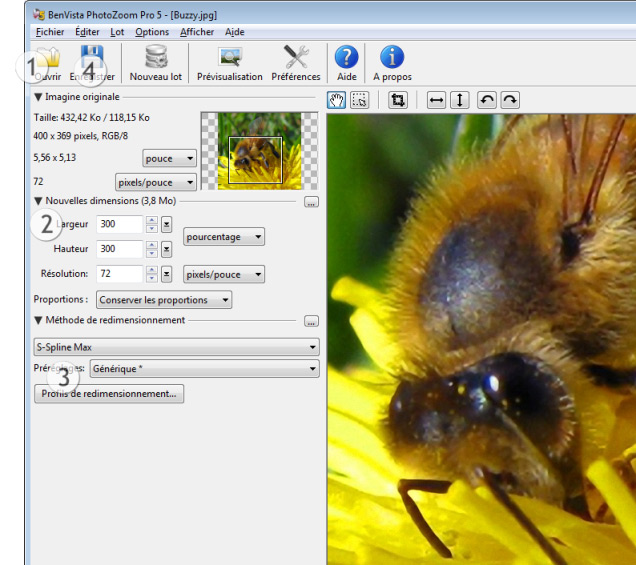

Démarrage rapide
Une courte introduction pour vous permettre de démarrer en quelques étapes simples :

Les chiffres dans l'image ci-dessus indiquent l'ordre dans lequel les différentes étapes doivent être exécutées.
- Cliquez sur Ouvrir et choisissez l'image à redimensionner
- Complétez les informations sur la nouvelle taille (en pixels, pourcentage, centimètres ou pouces selons vos préférences)
- Choisissez la méthode de redimensionnement ou utilisez les paramètres par défaut*
- Cliquez sur "Sauvegarder", entrez un nom de fichier et attendez que l'opération se termine
Terminé !
* Les valeurs par défaut (S-Spline Max, Générique) donneront dans la plupart des cas, de très bons résultats, mais les paramètres donnant la qualité optimale différent pour chaque image. Lorsque vous personnalisez les réglages ou sélectionnez une méthode d'interpolation différente (S-Spline XL ou S-Spline par exemple) ou un pré-réglage, vous pouvez juger de la qualité des résultats dans la fenêtre de préviualisation.
 Si vous souhaitez traiter simultanément plusieurs images, utilisez Traitement par lot
Si vous souhaitez traiter simultanément plusieurs images, utilisez Traitement par lot
Pour plus de conseils et d'informations sur les paramètres de redimensionnement, consultez le chapitre Réglages avancés